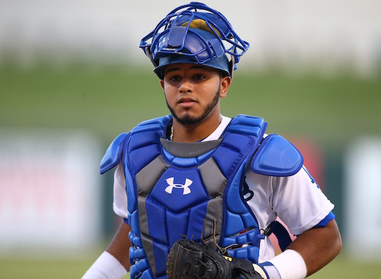

Scouting grades: Hit: 55 | Power: 50 | Run: 40 | Arm: 50 | Field: 55 | Overall: 55
Ruiz earned a $140,000 bonus out of Venezuela in 2014 because of his defensive prowess, then delighted the Dodgers by batting .374/.412/.527 in his U.S. debut at age 17 two years later. He has blossomed into one of the game's best all-around catching prospects while getting promoted aggressively, spending 2018 as the second-youngest regular (age 19) in the Double-A Texas League. He shared time at Tulsa with Will Smith, another prime catching prospect who's four years older but doesn't have as much offensive upside.
A switch-hitter, Ruiz has been much more effective from the left side of the plate and only one of his 23 homers in his first four pro seasons came from the right side. The toughest batter to strike out in the Texas League last season (12.6 plate appearances per whiff), he excels at making contact thanks to his advanced feel for the barrel and disciplined approach. He has solid raw power and could hit 15-20 homers on an annual basis once he hunts more pitches to drive and hits more balls in the air.
Ruiz is quicker than most catchers and moves well behind the plate. He has soft hands and frames the ball well, though he has occasional lapses of consistency with his receiving. He has average to solid arm strength but threw out just 24 percent of basestealers in his first two years in full-season ball.
